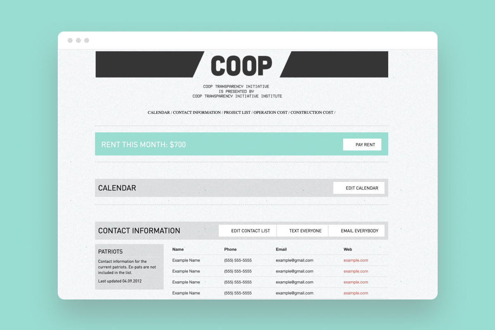

Brand & marketingFrontend
Coop Website
When I lived in a coop I tried to fix any social friction or communication inefficiency the only way I knew how: web design.
When this site was live it:
- connected to a PayPal account where people could pay rent online
- had an editable contact directory, important for a place that was used a medium term rental for artists and musicians
- hosted a community calendar where people could post events
- allowed residents to submit community projects and post updates
On the nerdy end of things, it was the first time I was trying to:
- write semamtic html (this was before the age of
and - use a css framework (in this case bootstrap)
- install lightweight cms tool that created a wysiwig editing experience so non-technical residents could edit things like contact information without logging into an intimidating backend or using terminal.
I briefly entertained the idea of spinning this in to a start up for other coops but was discouraged after realizing it was just a very over engineered google doc and google docs are free.
🔗 View a demo.
